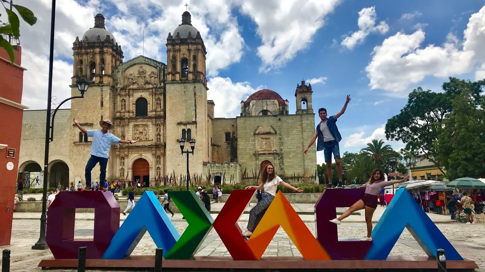

Oaxaca oficialmente llamado Estado Libre y Soberano de Oaxaca, es uno de los treinta y un estados que, junto con la Ciudad de México, forman México. Su capital y ciudad más poblada es Oaxaca de Juárez. Está dividido en 570 municipios, 418 de los cuales se gobiernan bajo el sistema de usos y costumbres, con formas locales reconocidas de autogobierno.
Está ubicado en la región suroeste del país.8 Limita al norte con Puebla y Veracruz, al este con Chiapas, al sur con el océano Pacífico y al oeste con Guerrero. Con 93 757 km², es el quinto estado más extenso por detrás de Chihuahua, Sonora, Coahuila y Durango— y, con 3 967 889 de habitantes en 2015, el décimo más poblado. Se fundó el 21 de diciembre de 1823
El estado es conocido principalmente por sus pueblos indígenas, representados por más de 16 grupos étnicos, y los zapotecos y mixtecos son los de mayor representación. Estas culturas han sobrevivido y mantenido sus usos y costumbres con mayor éxito que el resto del territorio nacional, gracias al accidentado y aislado territorio del estado.9 La mayoría de estos grupos habitan la zona centro del estado, cuya riqueza cultural, que incluye zonas arqueológicas como Monte Albán y Mitla, la convierten en una zona turística de importancia.
La Guelaguetza
Mejor conocidos como la Guelaguetza, se trata de una tradición ancestral de raíces prehispánicas y es la festividad más grande de Oaxaca (¡y nuestro estado tiene las mejores fiestas del país!). La Guelaguetza es una fiesta de agradecimiento por la llegada de las lluvias y las cosechas, en la que representantes de todas las regiones del estado se concentran en la capital para compartir su cultura a través de bailes, artesanías y comida. Mira qué bella imagen del baile de la flor de piña.

Viernes de llano
Los viernes del Llano son un concurso de belleza muy peculiar. En este certamen participan estudiantes de la Universidad Autónoma Benito Juárez de Oaxaca, y los asistentes son los encargados de votar por su contendiente favorita. ¿Cómo lo hacen? ¡Regalándole flores! Así es, la participante que más flores recibe de sus compañeros y amigos es la ganadora de este colorido concurso.
Tequio
El tequio es una forma de trabajo organizada en el que la comunidad se une para hacer un trabajo que beneficie a toda la comunidad. Arraigada en la comunidad zapoteca desde tiempos prehispánicos, cada participante aporta sus recursos (materiales, tiempo o trabajo) para realizar una obra en pos del bien común, aunque los fondos principales son aportados por el Gobierno.

Noche de rabanos
La tradicional Noche de rábanos tiene su origen en la época colonial, cuando los campesinos locales comenzaron a cosechar los rábanos de gran tamaño que se daban en la región. Es una fiesta popular que se celebra la noche del 23 de diciembre, en la plaza central de la capital, donde se exhiben figuras y escenas esculpidas usando solo estos deliciosos bulbos. Durante el festejo es costumbre comer buñuelos y romper los platos donde se sirven, ya que según el número de pedazos en que se rompa el traste, será la suerte del comensal durante el siguiente año.

Boda Oaxaqueña
Con una duración de tres días, las bodas oaxaqueñas son fiestas en serio. El primer día se celebra la unión civil, en el segundo día tiene lugar la ceremonia religiosa y el banquete. En medio de la fiesta se realiza un baile llamado “Mediu Xhiga”, también conocido como el son de cooperación. Ahí es cuando los novios se sientan en el centro de la pista y los invitados pasan a bailar con un cantarito donde cada invitado colocará dinero. Al terminar la canción, el cantarito se rompe enfrente de la pareja, como señal de que les irá muy bien en su nuevo camino y de que no les faltará nada. Finalmente, el tercer día se realiza el “lavado de ollas’, donde los novios anuncian la consumación del matrimonio, dando paso a un nuevo festejo.

Dia se la samaritana
El Día de la Samaritana se celebra durante el cuarto viernes de cuaresma, y la tradición indica que durante este día se deben regalar aguas frescas y nieves. Se abren cientos de puestos adornados con las flores que tanto nos gustan a los mexicanos y muchas cintas de colores, y las plazas y espacios públicos se llenan de gente que ansía participar de esta tradición. Las aguas se sirven desde ollas igualmente adornadas y nadie se va sin haberse tomado por lo menos un vasito. ¡Otra muestra de la generosidad que caracteriza al pueblo oaxaqueño!

Martes de brujas
Entre las tradiciones oaxaqueñas, esta tradición de Santa Cruz Xoxocotlán anuncia la llegada de la cuaresma. Las “brujas” son lámparas de petróleo que protagonizan un encuentro nocturno en el que se comparten tamales y atole en la plaza principal del pueblo, mientras se disfruta de música en vivo y otros eventos culturales.
Las velas istmeñas
Las velas istmeñas son originarias del Istmo de Tehuantepec en honor al santo patrono local y es organizada por uno o varios mayordomos apoyados por capitanes. Se organizan misas y fiestas en casa del mayordomo y un desfile en carros alegóricos para la «tirada de frutas», cuando las mujeres del Istmo arrojan frutas y regalos a los espectadores. Durante la celebración de las velas también se realizan las famosas calendas, donde todo el pueblo sale a recorrer las calles, mientras bailan, cantan y toman. Todo esto es previo a la gran cena baile, donde todos portarán su traje istmeño para lucirlo bailando al son de la Sandunga.
Oaxaca es un excelente destino para visitar en cualquier época del año. Este estado está repleto de lugares naturales y arquitectónicos, y es muy conocido por sus culturas indígenas. Cabe recalcar, que todas las épocas históricas de México decoran los espacios, calles y edificios, convirtiendo a Oaxaca en un Patrimonio Cultural de la Humanidad según la UNESCO.
Oaxaca ha impresionado a viajeros de todo el mundo debido a sus mágicos paisajes y tradiciones únicas un lugar. Es una verdadera joya del suroeste de México por eso en este post te compartimos lugares para visitar cerca de Oaxaca de Juárez.
A solo algunos kilómetros de la capital de Oaxaca, se encuentra Hierve el agua, un balneario natural que al mismo tiempo sirve como mirador de los valles centrales. Este auténtico paraíso, ofrece la oportunidad a sus visitantes de refrescarse en sus aguas cristalinas y admirar sus impactantes cascadas que parecen estar detenidas en el tiempo.
A 40 km de la Ciudad de Oaxaca, se encuentra el hermoso San Pablo Villa de Mitla, un pueblo que es conocido por sus hábiles artesanos, y por su imponente muestra de la era prehispánica. Como dato curioso, se dice que debajo de las casas actuales, se han encontrado restos de los hogares de los habitantes de aquella época. Dentro de este pueblo se encuentra uno de los principales atractivos turísticos de Oaxaca: Mitla. Este sitio arqueológico, es reconocido por la armonía de sus edificios y por las proporciones de sus patios que resaltan su extraordinaria decoración en las grecas de sus muros.
Monte Albán es uno de los lugares más visitados de Oaxaca, declarado Patrimonio Cultural de la Humanidad por la UNESCO desde 1987. Esta antigua capital ceremonial y militar zapoteca, se posiciona como uno de los sitios arqueológicos más importantes de México. Al recorrer la zona arqueológica, podrás ver claramente sus recintos ceremoniales, tumbas, patios y espacios para el juego de pelota. Este increíble recinto tiene también mucha influencia mixteca y teotihuacana en la arquitectura, la cerámica y la pintura mural.
Se trata de un nacimiento de agua sulfurosa y salina, formaciones rocosas por los escurrimientos del agua y dos albercas de agua dulce, que son alimentadas por pozos naturales que se encuentran en su alrededor.
A 17 km al norte de la ciudad de Oaxaca se encuentra el centro de arte fundado por Francisco Toledodedicado a la formación, creación y experimentación artística, ubicado en el barrio Vista Hermosa de la localidad San Agustín Etla.

Apoala es un enigmático pueblito escondido en las planicies de la Mixteca Oaxaqueña. Es un lugar que no se promueve pero que de alguna manera todo oaxaqueño conoce. Un lugar al que nadie sabe explicar cómo llegar porque se encuentra al final de varios caminos de tierra- todos llevan a Apoala. Sólo tienes que saber, como en cuento de hadas, por cuál empezar.
El mercado 20 de noviembre, también conocido como el mercado de las carnes, es una parrillada pública y una experiencia culinaria. Lo más interesante es su formato. Es de los únicos mercados en los que cada cliente escoge su carne cruda, verduras, y salsas y espera mientras las asan al carbón en el instante. Se encuentra ubicado a dos cuadras y media del Zócalo de la Ciudad de Oaxaca y media cuadra del mercado Benito Juárez, sobre las calles de Aldama y 20 de noviembre.

Es uno de los destinos turísticos mexicanos perfecto para apreciar el arte y valorar la creatividad. El Museo Textil de Oaxaca ofrece una visión sobre los textiles oaxaqueños de México y del mundo. Encontrarás diversos diseños, técnicas y procesos artesanales en uno de los sitios de interés en Oaxaca.
El espíritu indomable de nuestro Estado forma parte incomparable de sus pueblos mágicos, y las maravillas turísticas que los hacen únicos, así como la hospitalidad de sus habitantes y la calidad de sus servicios, aguardan tu visita para ayudar a conservar, compartir la mágia y la luz de Oaxaca
Ir a la galeria de fotos